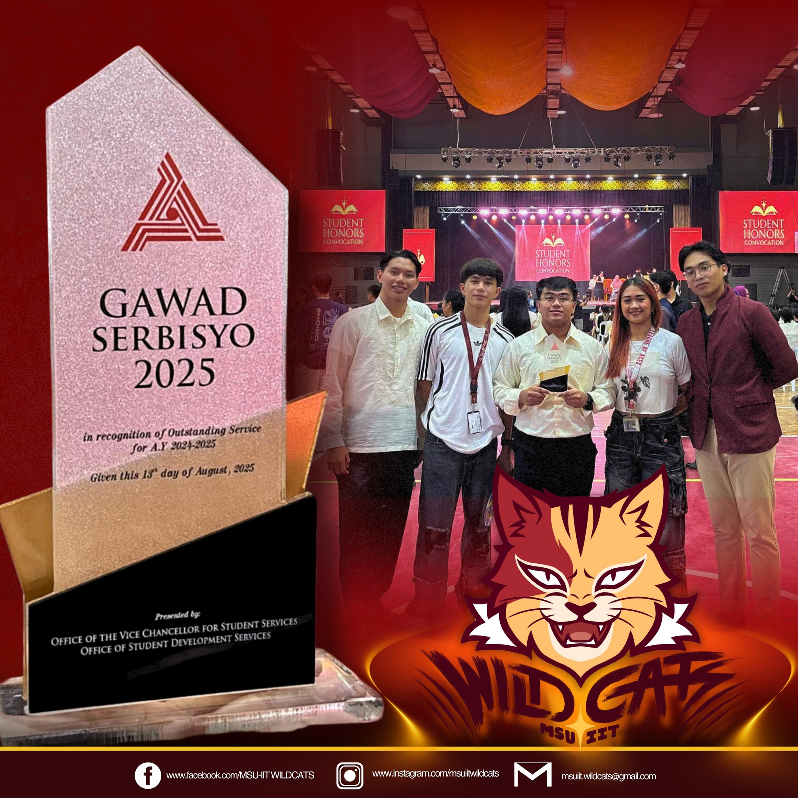

MSU-IIT Wildcats Receive First-Ever Institute-Level Recognition
The MSU-IIT WILDCATS proudly mark a historic milestone as they receive their very first Institute-level award; the Gawad Serbisyo 2025 , presented on August 13, 2025 by the Office of the Vice Chancellor for Student Services and the Office of Student Development Services
The Gawad Serbisyo recognizes exemplary service, dedication, and commitment to the Institute's values. This achievement reflects the WILDCATS' passion for excellence, teamwork, and their unwavering drive to contribute positively to the MSU-IIT community.
"This is not merely an accolade; it is our first step toward a wonderful future ahead," the WILDCATS expressed. "It symbolizes the beginning of a legacy, a journey where challenges will be embraced, victories will be celebrated and service will remain at the heart of everything we do."
With this reconigtion, the MSU-IIT Wildcats look forward to continuing their mission of fostering camaraderie, sportsmanship, and leadership, while setting their sights on greater achievements in the years to come.
